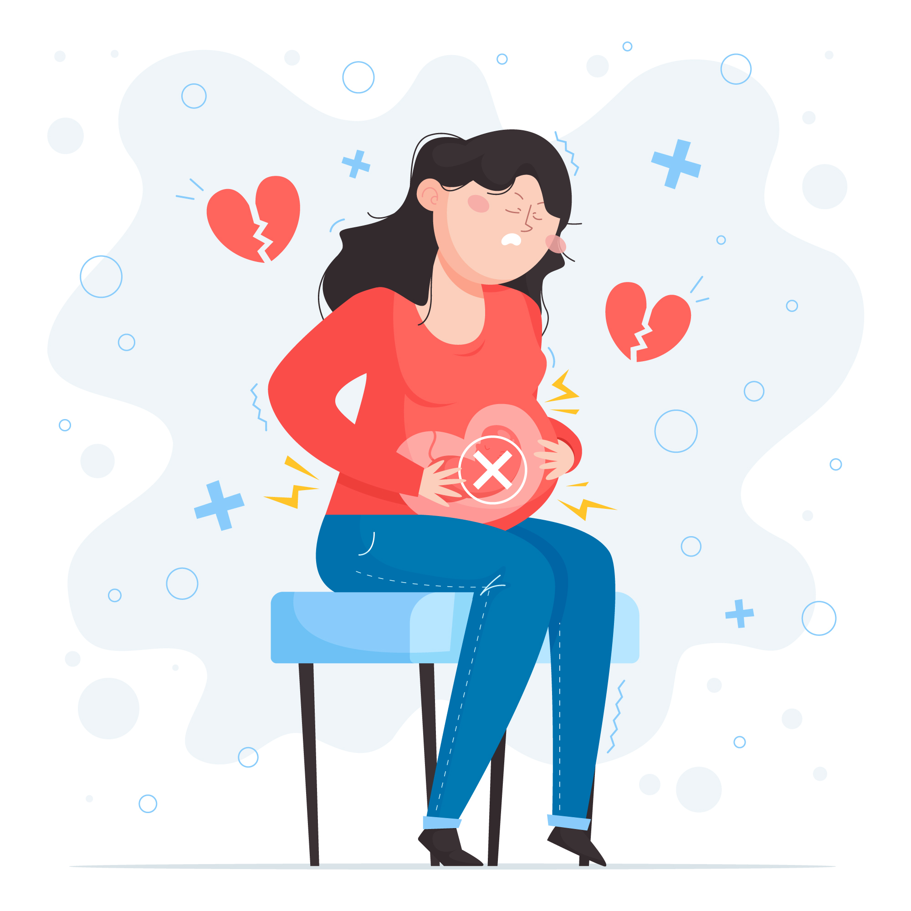

Hasil Tes

Solusio plasenta
Solusio plasenta adalah komplikasi kehamilan ketika plasenta terlepas dari dinding rahim sebelum proses persalinan. Kondisi ini dapat menyebabkan pasokan nutrisi dan oksigen pada bayi menurun atau terhambat.